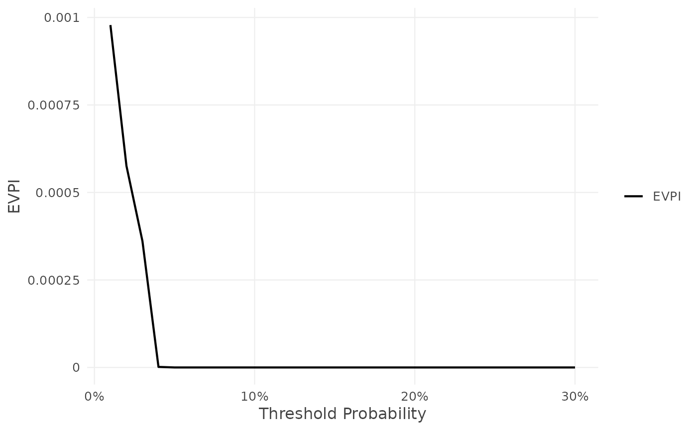
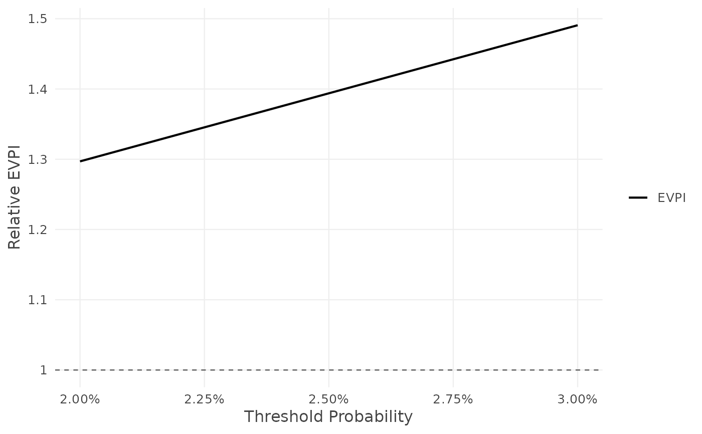
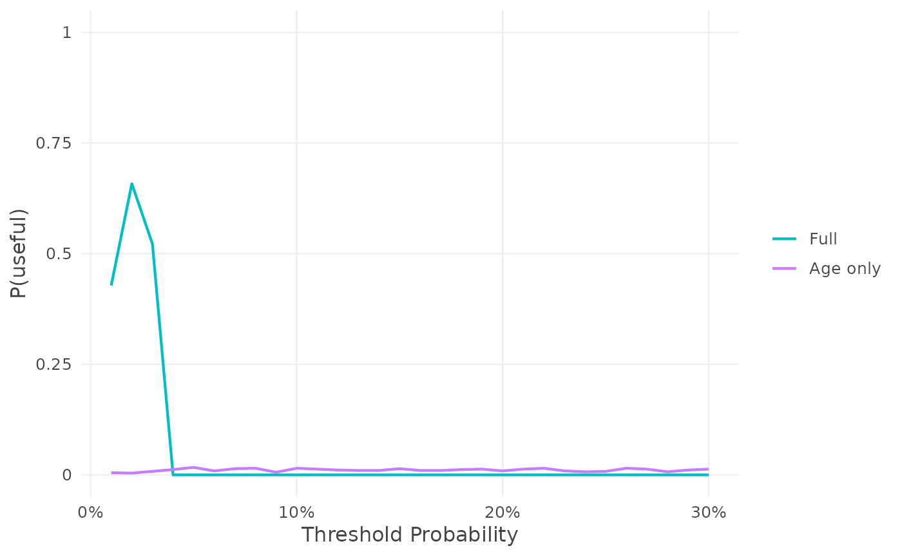
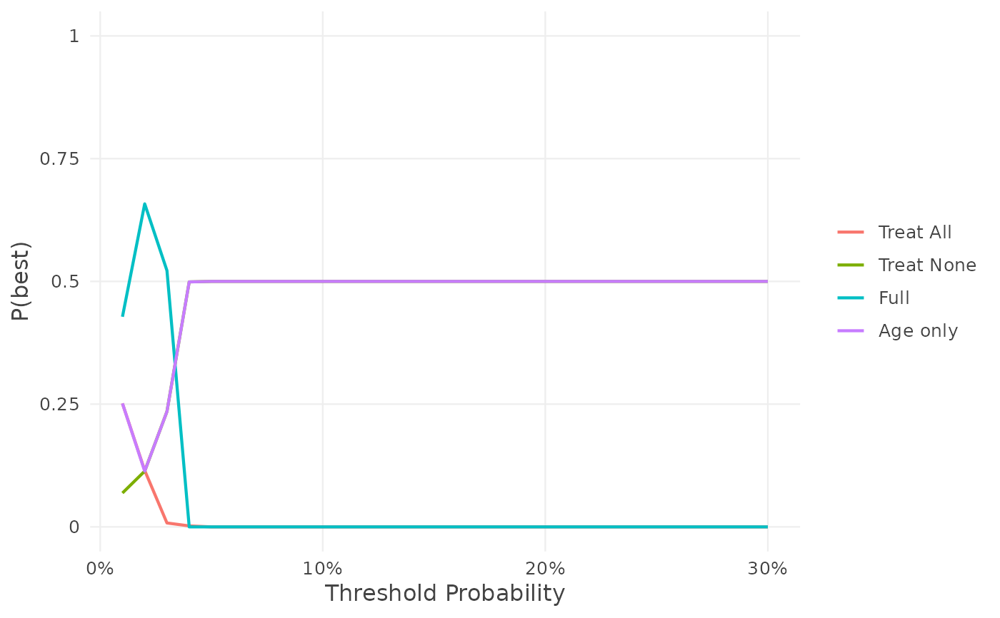

Value of information: EVPI, P(useful) and P(best)
evpi.RdFrom one set of draws of the net benefit of every strategy (each model,
treat all, treat none), evpi() computes three measures at each threshold:
the expected value of perfect information (EVPI, and relative EVPI), the
probability that each model is useful, P(useful), and the probability that
each strategy is the best, P(best). EVPI is the result itself; P(useful)
and P(best) are kept in it, as e$p_useful and e$p_best (for a result
e), each with its own print(), summary(), plot() and
as.data.frame(). As they come from the same draws, the three measures
agree with each other exactly.
Arguments
- x
A result of
nb_val(), for one model or several.- ...
More results of
nb_val(), for other models evaluated on the same data, outcome, thresholds and prior (and horizon, cause and censoring), combined as by c(). A result with one model given here with a name is labelled with its name.- n_sim
Number of draws. Default 1000.
- labels
Optional names of the models, one per model, in order; default: the models' labels.
Value
An object of class voipred_evpi, a list with:
estimates: a data frame with one row per threshold and columnsthreshold,ENB_current,ENB_perfect,EVPIandrEVPI(returned byas.data.frame());p_useful: P(useful), an object of classvoipred_p_usefulwhoseestimates(andas.data.frame()) have one row per threshold and model and columnsthreshold,modelandp_useful;p_best: P(best), an object of classvoipred_p_bestwhoseestimates(andas.data.frame()) have one row per threshold and strategy and columnsthreshold,strategyandp_best;ENB: the expected net benefit of each strategy at each threshold;models,outcome,censoring,prior,draws("posterior"or"Bayesian bootstrap"),n_simandcall.
The result and its parts have print(), summary(), plot() and
as.data.frame() methods (summary.voipred_voi(),
plot.voipred_evpi(), plot.voipred_p_useful(),
plot.voipred_p_best()); plot(e, type = "p_useful") and
plot(e, type = "p_best") draw P(useful) and P(best). EVPI can also be
drawn under the decision curve with plot(<nb_val result>, evpi = ).
Details
EVPI. The expected loss in net benefit due to uncertainty about which strategy is best. With \(NB_s\) the net benefit of strategy \(s\) and expectations over its posterior: $$ENB_{perfect} = E\{\max_s NB_s\}, \qquad ENB_{current} = \max_s E\{NB_s\},$$ $$EVPI = ENB_{perfect} - ENB_{current}.$$ EVPI is in net benefit units (net true positives per patient); it is 0 when the best strategy is certain. It is never negative: both terms are means over the same draws.
The relative EVPI compares the gain from perfect information with the
gain from using the model(s), both relative to the best default strategy:
$$rEVPI = \frac{ENB_{perfect} - \max\{0, E(NB_{all})\}}
{ENB_{current} - \max\{0, E(NB_{all})\}}.$$
For example, 1.25 means that perfect information would give 25% more net
benefit than using the best model now. It is Inf when no model is better
than the default strategies in expectation (the denominator is 0) and EVPI
is positive, and NA when both are 0.
P(useful) (e$p_useful). For each model, the probability that it gives
a higher net benefit than both default strategies:
$$P(useful) = P\{NB_{model} > \max(NB_{all}, 0)\} = P(\Delta NB > 0),$$
the share of the draws in which the model's net benefit is strictly higher.
A model that ties with a default strategy (e.g. at a threshold where it
treats everyone, or no one) is not counted as useful. P(useful) compares
each model only with the default strategies, so it does not depend on the
other models.
P(best) (e$p_best). For each strategy, the probability that it has the
highest net benefit:
$$P(best_s) = P\{NB_s = \max_t NB_t\},$$
the share of the draws in which it is the best. Exact ties are shared
equally, so the probabilities of all strategies add up to 1 at each
threshold.
Uncertainty
The uncertainty about the net benefit is its posterior (see the prior of
nb_val()), represented by n_sim draws, in each of which the net benefit of
every model, of treating all and of treating none is computed:
binary outcome: draws from the conjugate posterior of the prevalence and of each model's sensitivity and specificity, with the prior of
nb_val()(exact Beta / Dirichlet draws, as in bayesDCA). Several models are drawn jointly (a Dirichlet over the patterns of treat / do not treat across the models), so their correlation on the same patients is kept, and each model keeps its own posterior;survival and competing-risks outcomes, and binary outcomes with case weights (improper prior): the Bayesian bootstrap. Each draw gives the patients Dirichlet(1, ..., 1) weights (times the case weights) and recomputes the net benefit with the same estimator as
nb_val(). With cIPCW (cipcw), the censoring model is refitted in every draw and the censoring weights recomputed from it (seecipcw_control()).
The predicted risks are kept fixed in every draw. The expected net benefits are the means of the draws.
References
Sadatsafavi M, Lee TY, Wynants L, Vickers AJ, Gustafson P. Value-of-information analysis for external validation of risk prediction models. Medical Decision Making 2023; 43(5): 564-575. Wynants L, Riley RD, Timmerman D, Van Calster B. Random-effects meta-analysis of the clinical utility of tests and prediction models. Statistics in Medicine 2018; 37: 2034-2052. Rubin DB. The Bayesian bootstrap. Annals of Statistics 1981; 9(1): 130-134.
Examples
df_dev_binary <- gusto[1:5000, ]
df_val_binary <- gusto[5001:5500, ]
fit1 <- glm(day30 ~ age + Killip + sysbp + pulse,
family = binomial, data = df_dev_binary)
df_val_binary$p1 <- predict(fit1, newdata = df_val_binary, type = "response")
fit2 <- glm(day30 ~ age, family = binomial, data = df_dev_binary)
df_val_binary$p2 <- predict(fit2, newdata = df_val_binary, type = "response")
res <- nb_val(data = df_val_binary,
predicted_risk = list(Full = "p1", `Age only` = "p2"),
outcome = "day30",
thresholds = seq(0.01, 0.3, by = 0.01))
set.seed(1)
e <- evpi(res)
# EVPI
e
#> EVPI: Full, Age only; binary, n = 500, prior improper Beta(0, 0), 1000 posterior draws
#>
#> threshold EVPI rEVPI
#> 0.01 0.0009783 Inf
#> 0.02 0.0005761 1.297
#> 0.03 0.0003607 1.491
#> 0.04 0.0000016 Inf
#> 0.05 0.0000000 Inf
#> 0.06 0.0000000 Inf
#> 0.07 0.0000000 Inf
#> 0.08 0.0000000 Inf
#> 0.09 0.0000000 Inf
#> 0.10 0.0000000 Inf
#> # 20 more rows; use summary() or as.data.frame()
#> # From the same draws: P(useful) in $p_useful, P(best) in $p_best
summary(e)
#> EVPI: Full, Age only; binary, n = 500, prior improper Beta(0, 0), 1000 posterior draws
#> EVPI > 0 at 0.01-0.04; largest 0.0009783 at 0.01
#>
#> threshold EVPI rEVPI
#> 0.01 0.0009783 Inf
#> 0.02 0.0005761 1.297
#> 0.03 0.0003607 1.491
#> 0.04 0.0000016 Inf
#> 0.05 0.0000000 Inf
#> 0.06 0.0000000 Inf
#> 0.07 0.0000000 Inf
#> 0.08 0.0000000 Inf
#> 0.09 0.0000000 Inf
#> 0.10 0.0000000 Inf
#> # 20 more rows; summary(x, thresholds = ) to choose
plot(e)

plot(e, type = "relative")

# P(useful) and P(best), from the same draws
e$p_useful
#> P(useful): Full, Age only; binary, n = 500, prior improper Beta(0, 0), 1000 posterior draws
#>
#> threshold model p_useful
#> 0.01 Full 0.428
#> 0.01 Age only 0.005
#> 0.02 Full 0.658
#> 0.02 Age only 0.004
#> 0.03 Full 0.522
#> 0.03 Age only 0.008
#> 0.04 Full 0.000
#> 0.04 Age only 0.012
#> 0.05 Full 0.000
#> 0.05 Age only 0.017
#> 0.06 Full 0.000
#> 0.06 Age only 0.009
#> 0.07 Full 0.000
#> 0.07 Age only 0.014
#> 0.08 Full 0.000
#> 0.08 Age only 0.015
#> 0.09 Full 0.000
#> 0.09 Age only 0.006
#> 0.10 Full 0.000
#> 0.10 Age only 0.015
#> # 20 more thresholds; use summary() or as.data.frame()
summary(e$p_useful)
#> P(useful): Full, Age only; binary, n = 500, prior improper Beta(0, 0), 1000 posterior draws
#> Thresholds where the probability that the model is useful is:
#>
#> model P > 0.95 0.5 to 0.95 P < 0.5
#> Full - 0.02-0.03 0.01, 0.04-0.30
#> Age only - - 0.01-0.30
plot(e, type = "p_useful")

e$p_best
#> P(best): Full, Age only; binary, n = 500, prior improper Beta(0, 0), 1000 posterior draws
#>
#> threshold strategy p_best
#> 0.01 Full 0.428
#> 0.01 Age only 0.252
#> 0.01 Treat All 0.252
#> 0.01 Treat None 0.069
#> 0.02 Full 0.658
#> 0.02 Age only 0.114
#> 0.02 Treat All 0.115
#> 0.02 Treat None 0.114
#> 0.03 Full 0.522
#> 0.03 Age only 0.235
#> 0.03 Treat All 0.008
#> 0.03 Treat None 0.235
#> 0.04 Full 0.000
#> 0.04 Age only 0.499
#> 0.04 Treat All 0.002
#> 0.04 Treat None 0.499
#> 0.05 Full 0.000
#> 0.05 Age only 0.500
#> 0.05 Treat All 0.000
#> 0.05 Treat None 0.500
#> 0.06 Full 0.000
#> 0.06 Age only 0.500
#> 0.06 Treat All 0.000
#> 0.06 Treat None 0.500
#> 0.07 Full 0.000
#> 0.07 Age only 0.500
#> 0.07 Treat All 0.000
#> 0.07 Treat None 0.500
#> 0.08 Full 0.000
#> 0.08 Age only 0.500
#> 0.08 Treat All 0.000
#> 0.08 Treat None 0.500
#> 0.09 Full 0.000
#> 0.09 Age only 0.500
#> 0.09 Treat All 0.000
#> 0.09 Treat None 0.500
#> 0.10 Full 0.000
#> 0.10 Age only 0.500
#> 0.10 Treat All 0.000
#> 0.10 Treat None 0.500
#> # 20 more thresholds; use summary() or as.data.frame()
summary(e$p_best)
#> P(best): Full, Age only; binary, n = 500, prior improper Beta(0, 0), 1000 posterior draws
#> Most likely best: Full 0.01-0.03, Age only 0.04-0.30
#>
#> threshold strategy p_best
#> 0.01 Full 0.428
#> 0.01 Age only 0.252
#> 0.01 Treat All 0.252
#> 0.01 Treat None 0.069
#> 0.02 Full 0.658
#> 0.02 Age only 0.114
#> 0.02 Treat All 0.115
#> 0.02 Treat None 0.114
#> 0.03 Full 0.522
#> 0.03 Age only 0.235
#> 0.03 Treat All 0.008
#> 0.03 Treat None 0.235
#> 0.04 Full 0.000
#> 0.04 Age only 0.499
#> 0.04 Treat All 0.002
#> 0.04 Treat None 0.499
#> 0.05 Full 0.000
#> 0.05 Age only 0.500
#> 0.05 Treat All 0.000
#> 0.05 Treat None 0.500
#> 0.06 Full 0.000
#> 0.06 Age only 0.500
#> 0.06 Treat All 0.000
#> 0.06 Treat None 0.500
#> 0.07 Full 0.000
#> 0.07 Age only 0.500
#> 0.07 Treat All 0.000
#> 0.07 Treat None 0.500
#> 0.08 Full 0.000
#> 0.08 Age only 0.500
#> 0.08 Treat All 0.000
#> 0.08 Treat None 0.500
#> 0.09 Full 0.000
#> 0.09 Age only 0.500
#> 0.09 Treat All 0.000
#> 0.09 Treat None 0.500
#> 0.10 Full 0.000
#> 0.10 Age only 0.500
#> 0.10 Treat All 0.000
#> 0.10 Treat None 0.500
#> # 20 more thresholds; summary(x, thresholds = ) to choose
plot(e, type = "p_best")

# as data frames
head(as.data.frame(e))
#> threshold ENB_current ENB_perfect EVPI rEVPI
#> 1 0.01 0.0059847827 6.963104e-03 9.783209e-04 Inf
#> 2 0.02 0.0019400520 2.516141e-03 5.760889e-04 1.296945
#> 3 0.03 0.0007349571 1.095616e-03 3.606591e-04 1.490721
#> 4 0.04 0.0000000000 1.562270e-06 1.562270e-06 Inf
#> 5 0.05 0.0000000000 1.954232e-19 1.954232e-19 Inf
#> 6 0.06 0.0000000000 1.257429e-19 1.257429e-19 Inf
head(as.data.frame(e$p_useful))
#> threshold model p_useful
#> 1 0.01 Full 0.428
#> 2 0.02 Full 0.658
#> 3 0.03 Full 0.522
#> 4 0.04 Full 0.000
#> 5 0.05 Full 0.000
#> 6 0.06 Full 0.000
head(as.data.frame(e$p_best))
#> threshold strategy p_best
#> 1 0.01 Full 0.428
#> 2 0.02 Full 0.658
#> 3 0.03 Full 0.522
#> 4 0.04 Full 0.000
#> 5 0.05 Full 0.000
#> 6 0.06 Full 0.000